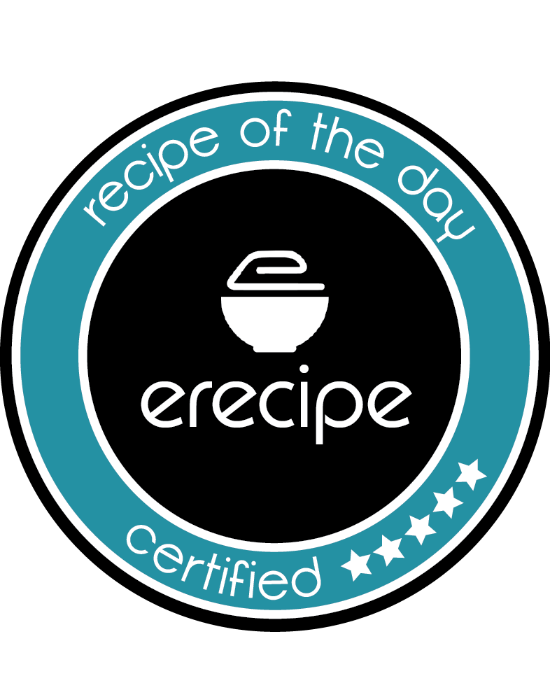
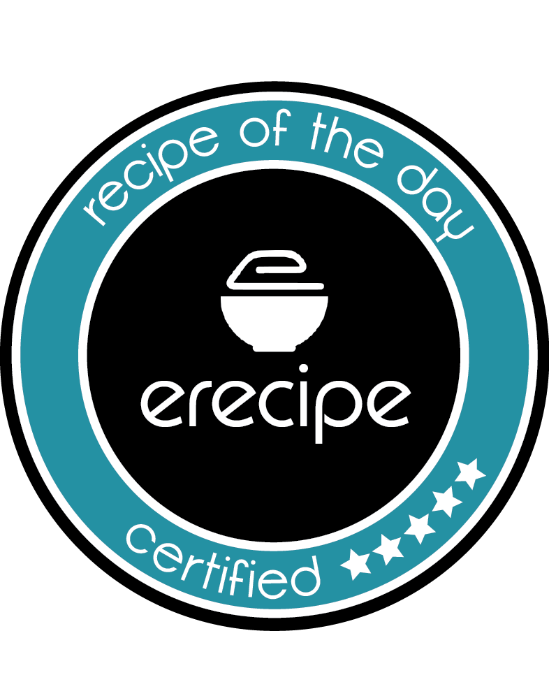

Signup for Free!!!
Signup for Free!!!
eRecipe was designed with the chef in mind. Our platform allows you to easily post your favorite recipes and also search thousands of recipes posted by cooking connissuers just like you! In addition to posting your recipes, you can create your own eCookbooks, post your recipes on your social pages, and much much more! When you post a recipe on eRecipe, it will be neatly formatted and searchable by thousands of weekly visitors, so it's ideal for aspiring chefs and food bloggers. We'll even syndicate your recipes to other popular sites so you get even more exposure! Create your profile and start posting today!
When you post a recipe to eRecipe, we'll automatically generate Nutrition Facts for your dish, which will be viewable from your recipe page. Our Nutrition Facts are generated from over 1,000 sources including the FDA, USDA, and more, making it the most accurate Nutrition Facts analyzer on the internet! We even provide a free widget for you to post the nutrition facts to your blog, allowing you to style it any way you'd like. You can customize the layout, colors, fonts and more!
eRecipe gives you badges for the Recipe of the Day, Chef of the Week, and Blog of the Month. We'll send you the badge so you can display it proudly on your blog, so your followers can see the distinctions you've earned! You'll also be featured on the homepage of our website and our social media feeds, allowing you to increase your traffic and grow your following! It's one of the many reasons eRecipe was made for food-bloggers!
 

With our state-of-the-art platform, you're recipes will receive incredible traffic and exposure, allowing you to increase your online following. Beautifully integrated with your blog and social media, there's no other platform that will help you reach more people, all absolutely free!